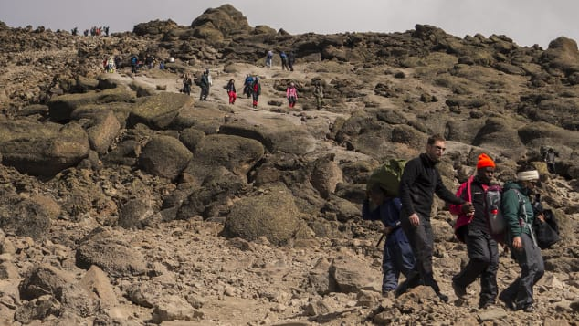

The great Serengeti wildebeest migration is the movement of vast numbers of the Serengeti's wildebeest, accompanied by large numbers of zebra, and smaller numbers of Grant's gazelle, Thomson's gazelle, eland and impala. These move in an annual pattern which is fairly predictable. They migrate throughout the year, constantly seeking fresh grazing and, it's now thought, better quality water. The precise timing of the Serengeti wildebeest migration is entirely dependent upon the rainfall patterns each year – here we explain how the broad pattern works. This migration, month by month, is shown on the map on the right side of this page – the moving red represents the main herds.
For more information on the Serengeti migration area and the wildebeest migration, see also:
Interactive satellite map of the Serengeti, showing safari camps and lodges. The short rains begin around early November. A little after this, in late November and December, the herds of the wildebeest migration arrive on the short-grass plains of the Serengeti. These are south and east of Seronera, around Ndutu and include the north of the Ngorongoro Conservation Area. Dispersed across these plains, wildebeest and zebra are everykzwhere – feeding on the fresh, nutritious grasses. They stay here through January, February and March, with most wildebeest calves born in a short window around February. Gradually they spread west across these plains, then around April they start their great migration north.
By May the Serengeti's wildebeest all seem to be moving north, migrating to seek fresh grazing and water. The area around Moru Kopjes and west of Seronera is then hectic with a series of moving columns, often containing hundreds of thousands of animals – joined by many zebra, and a scattering of Thomson's and Grant's gazelles. Some of the migration then head due north of Seronera, but most are usually further west. Around June the wildebeest migration is often halted on the south side of the Grumeti River, which has some channels which block or slow their migration north. The wildebeest then congregate there, in the Western Corridor, often building up to a high density before crossing the river. The river here is normally a series of pools and channels, but it's not continuous – and so whilst they always represent an annual feast for the Grumeti River's large crocodiles, these aren't usually quite as spectacular as the crossings of the Mara River, further north. The wildebeest migration continues moving northwards during July and August, often spreading out across a broad front: some heading through Grumeti Reserve and Ikorongo, others north through the heart of the Serengeti National Park.